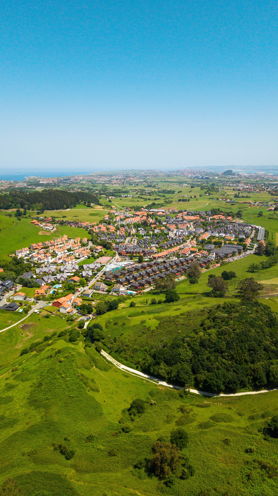

Siguiente capítulo
Reconocer el problema.
La transformación del territorio tiene causas que debemos identificar antes de hablar de soluciones.
Explorar causas →02 · Nosotros
HUELLA es un recorrido educativo para comprender cómo la pérdida de bosques afecta al ambiente y a las personas, y por qué su recuperación importa.
Nuestro propósito
Este proyecto reúne ideas sobre la deforestación, sus causas, sus consecuencias y las formas de responder a ella. Presentamos el tema de manera visual y cercana para mostrar las conexiones entre naturaleza, salud y sociedad.
Creemos que comprender esas relaciones es un primer paso para valorar los bosques y reconocer la responsabilidad compartida de protegerlos.
Conoce las ideas que nos orientan ↗Nuestra ruta
La transformación del territorio tiene causas que debemos identificar antes de hablar de soluciones.
Explorar causas →La pérdida forestal puede afectar al carbono almacenado, la biodiversidad, el agua y los medios de vida de las personas.
Explorar impactos →Conservar los bosques existentes y recuperar áreas degradadas son tareas que requieren decisiones compartidas.
Explorar soluciones →
BOSQUE · PERSONAS · FUTUROUna historia compartida
Los bosques almacenan carbono y aportan beneficios para el suelo y el agua. Los espacios verdes también se asocian con el bienestar de las personas. Conservarlos conecta el cuidado ambiental con la vida cotidiana.
Bosque y sociedad